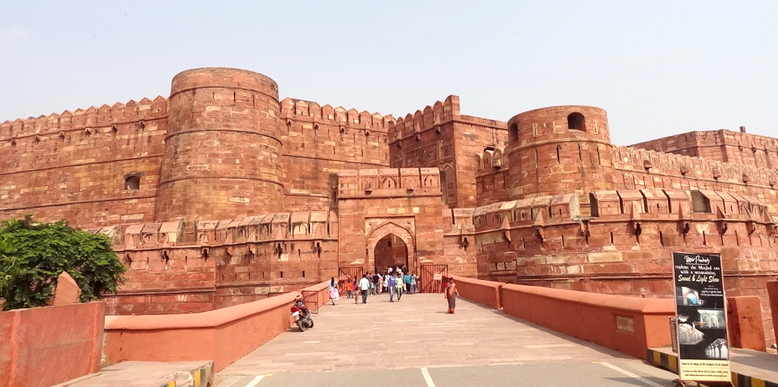

INCREDIBLE INDIAN HERITAGE
Indian culture is the heritage of social norms and technologies that originated in or are associated with
the
ethno-linguistically diverse India. The term also applies beyond India to countries and cultures whose
histories
are strongly connected to India by immigration, colonisation, or influence, particularly in South Asia and
Southeast Asia. India's languages, religions, dance, music, architecture, food and customs differ from place
to
place within the country
Indian culture, often labelled as a combination of several cultures, has been influenced by a history that
is
several millennia old, beginning with the Indus Valley civilization and other early cultural areas.
Many
elements of Indian culture, such as Indian religions, mathematics, philosophy, cuisine, languages, dance,
music
and movies have had a profound impact across the Indosphere, Greater India, and the world.
The culture is an interesting blend of different styles and influences which are flawlessly visible in its royal palaces, majestic forts and historical monuments. You will enjoy visiting its historical monuments many of which have been recognized as World Heritage Sites. You will be delighted to see its arresting handicrafts which are perfect souvenirs to take back home for your family or friends. Be it vegetarian or non-vegetarian, the country offers a wide variety of delicacies. And to experience pure entertainment don’t miss the different forms of dance and music of India. And your great experiences don’t end here. You can also experience the royal lifestyle of the raja-maharajas of the bygone era or the simple life of remote villages. Each destination has something interesting to unfold before you.
RELIGIOUS CULTURE
Indian-origin religions Hinduism, Jainism, Buddhism, and Sikhism, are all based on the concepts of
dharma
and karma.
India has 28 states and 8 union territories with different culture and it is the second most populated
country
in the world. The Indian culture, often labeled as an amalgamation of several various cultures, spans across
the
Indian subcontinent and has been influenced and shaped by a history that is several thousand years
old.
-

Bride in Saree and Groom in Shervani in a Hindu Indian Wedding
FESTIVALS
India, being a multi-cultural, multi-ethnic and multi-religious society, celebrates holidays and festivals
of
various religions. The three national holidays in India, the Independence Day, the Republic Day and the
Gandhi
Jayanti, are celebrated with zeal and enthusiasm across India.
-
MAKAR SANKRANTI
Makar Sankranti is observed with social festivities such as colourful decorations, rural children
going
house to house, singing and asking for treats in some areas, melas (fairs), dances, kite flying,
bonfires
and feasts.
Makar Sankranti
-
HOLI
Lohri is a popular winter Punjabi folk festival celebrated primarily in Northern India. The
significance
and legends about the Lohri festival are many and these link the festival to the Punjab region. It is
believed by many that the festival marks the passing of the winter solstice.
Lohri Celebration
CUISINE
A cuisine is a style of cooking characterized by distinctive ingredients, techniques and dishes, and
usually
associated with a specific culture or geographic region. Regional food preparation techniques, customs, and
ingredients combine to enable dishes unique to a region.
Indian cuisine consists of a variety of regional and traditional cuisines native to India. Given
the
diversity in soil, climate, culture, ethnic groups, and occupations, these cuisines vary substantially and
use
locally available spices, herbs, vegetables, and fruits.
Indian food is also heavily influenced by religion, in particular Hinduism and Islam, cultural choices and
traditions
-
Indian Spices
-
Idli

South-Indian Food
-
Kabab
CLOTHING
Clothing in India varies with the different ethnicities, geography, climate, and cultural traditions of
the
people of each region of India. Historically, clothing has evolved from simple garments like kaupina,
langota,
achkan, lungi, sari, well as rituals and dance performances. In urban areas, western clothing is common and
uniformly worn by people of all social.
Sometimes, color codes are followed in clothing based on the religion and rituals concerned. The
traditional style of clothing in India varies with male or female distinctions. This is still followed in
rural
areas, though is changing in the urban areas.
-
Indian Saree
-
Salwar Kameez

Aasami Saree

Gujarati Saree
-
Anarkali Suit

Dhoti Kurta

South-Indian Dhoti

Kurta Paijama
PALACES
Among all the Indian heritage, architectural sites are the treat to the eyes of travelers from all over the world. Besides, Indians’ love for its rich history keeps these heritage sites alive. It is the duty of the older generations to invoke the same love and respect for these sites. They shall learn the significance and keep their willingness to preserve the heritage for future generations.
Indian history is as rich as its culture. If we look at the architectural marvels of the heritage sites such as Hampi, Khajuraho, Taj Mahal, Lal Kila, Qutub Minar, Fatehpur Sikri, Bhulbhulaiya, these still hold immense significance in terms of their marvelous art, engineering, construction, and labor behind each site. There are many ancient and historical monuments that stand alive. Some of them took literally one decade to hundred years to be built properly. Such beautiful heritage sites are very rarely seen these days if we talk about modern-day architecture.
Hence, as responsible citizens, it is our duty to take care of these Indian heritage sites and monuments so that these could be preserved and witnessed by our future generations as well.
- 
Agra Fort

Golden Temple
-
Jamamasjid

Hampi ruins
Go Back to topüëÜ